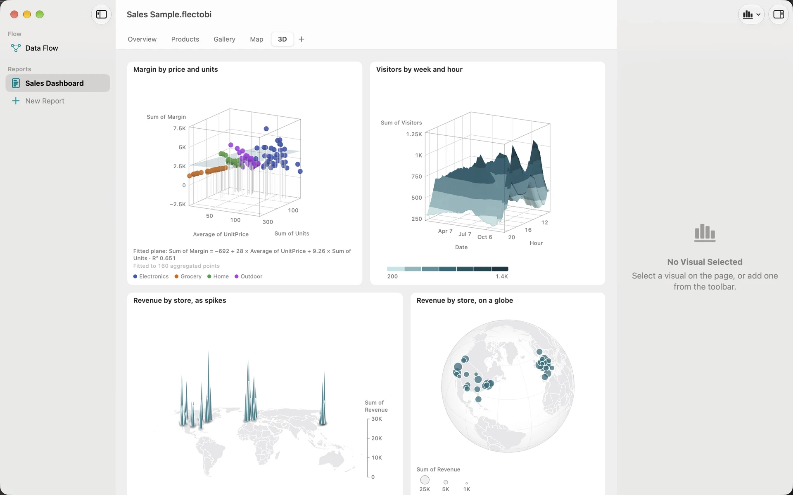

3D Visuals
Most charts should be flat, because flat charts are easy to read. FlectoBI offers 3D for the few cases where your data has a real third measure, such as height, or a place on a sphere. In those cases a flat chart has to hide something.
There are four 3D Visuals: 3D Scatter, Surface Plot, Spike Map and the globe.

Why there are no 3D bars or pies
A 3D column hides the columns behind it and makes the front ones look taller. A tilted pie makes the near slices look bigger than the far ones. A flat chart with the same data is easier to read and more honest.
So FlectoBI has no 3D bars, pies, lines or areas. A 3D Visual is offered only where the third measure is real. All of them use an orthographic view, which means equal values stand equally tall wherever they are on the screen. The spike map’s ground takes a mild perspective.
3D Scatter
A 3D Scatter shows points by three numbers. Add it with Add Visual > 3D Scatter.
- Fill Details with the Column that names each point, such as a product.
- Fill Values (X, Y, Z and Size) with four Values, in that order.
- Optionally fill Legend to split the points into series.
Points are spheres, sized from 4 to 16 points. Hover a point to see its name, X, Y, Z and Size. The chart draws up to 2,000 points and samples evenly beyond that.
Options
- Colour: By series or By height.
- Drop lines: Automatic draws a line from each point to the floor when there are 200 points or fewer. You can set it on or off.
- Fitted surface: None, Plane or Smoothed.
A Plane is the flat surface that best fits the points. The caption shows its equation. A Smoothed surface follows the points nearby. Both are fitted to the points shown, and both are hidden while you turn the chart.
Surface Plot
A Surface Plot shows a height over a grid. Fill X and Y with Columns to lay out the floor, and Height with one Value. Numbers and dates are grouped into bins along each axis.
Grid size is Automatic, or from 5 to 60 bins per axis. When every cell of the grid has data, the surface is drawn as one solid shape in bands of the colour scale. If some cells are empty, FlectoBI draws points instead and says what share has no data.
Hover to ring the nearest bin. The tooltip shows its X and Y ranges, its Height and how many rows it holds. It never shows a value that was guessed between bins.
Spike Map
A Spike Map is a Bubble Map with Marks set to Spikes, drawn on a tilted map. Each spike is a thin triangle, and its height is the value. It also appears as its own item in Add Visual.
Spikes stand on their own tilted map, never on a globe. If you pick Spikes while the View is Globe, the View switches to World.
The globe
The globe is a View of a Filled Map or a Bubble Map. Choose Globe in the View picker. It starts facing the centre of your data. Bubbles keep flat sizes, drawn as discs that face you.
Only the near side is drawn, hovered and counted. If places are on the far side, a line names them, for example “Brazil, Chile, Fiji and 2 more places are on the far side of the globe. Turn it to see them.”
Turning a 3D Visual
3D Visuals never spin by themselves. They turn only when you turn them, and they snap to the new angle.
- Drag anywhere on the chart.
- Command and the arrow keys turn the selected Visual by 15 degrees at a time.
- With VoiceOver, use the actions Rotate Left, Rotate Right, Tilt Up and Tilt Down.
The floor of a 3D chart never tips more than 10 degrees below the horizon, and never past a view from straight above. The spike map turns up to 45 degrees either way and tilts within a fixed range. On the globe you can turn freely in longitude and tilt up to the poles.
Reset View and Keep This View
Turning is view state, so it does not mark the Workbook as changed, and Undo does not reverse it.
- Reset View is a button in the top right of the card, quiet until you have turned the view. It is also in the card menu. It returns the chart to the kept view, or to the default.
- Keep This View in the card menu saves the current angle in the Workbook, so it opens that way next time.
Reduce Motion
3D Visuals never animate when they turn, so Reduce Motion changes nothing there. On the rest of the Page, Reduce Motion stops marks from growing in and data changes from sliding. Only the fade of a Selection remains. See Keyboard and accessibility.